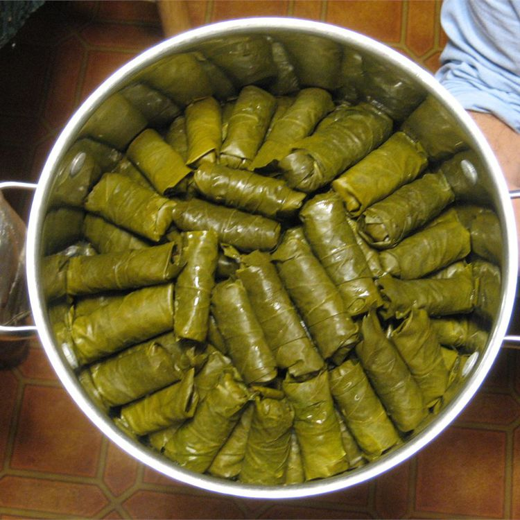

Dolma!

Dolma is a dish of vegetables or leaves stuffed with a filling, and is a common dish in the cuisines of the Middle East, Central Asia, and the Mediterranean
Description:
Dolma is typically made with a filling of rice, minced meat, offal, seafood, fruit, or any combination of these inside a vegetable or a leaf wrapping. Wrapped dolma, specifically, are known as sarma, made by rolling grape, cabbage, or other leaves around the filling
Ingredients:
- 1 tbsp olive oil
- 2 onions, minced
- 1 1/2 cups hot water, or as needed to cover
- 2 tbsp tomato paste
- 2 tbsp dried currants
- 2 tbsp pine nuts
- 1 tbsp ground cinnamon
- 1 tbsp dried mint
- 1 tbsp dried dill weed
- 1 tbsp ground allspice
- 1 tbsp ground cumin
- 1 (8 ounce) jar grape leaves, drained and rinsed in warm water
Steps:
- Heat oil in a medium saucepan over medium heat. Add onions and sauté until tender, about 5 minutes. Stir in rice, then add enough hot water to cover. Cover and simmer until rice is halfway cooked, about 10 minutes.
- Remove from the heat and stir in tomato paste, currants, pine nuts, cinnamon, mint, dill, allspice, and cumin. Let mixture cool, about 15 minutes.
- Prepare a large pot by placing an inverted plate on the bottom; this will protect the dolmas from direct heat during steaming.
- Cut off and discard any grape leaf stems. Place about 1 teaspoon cooled rice mixture into the center of a leaf. Fold in the sides, then roll into a cigar shape. Place into the prepared pot. Repeat to make remaining dolmas.
- Pour in just enough warm water to reach the bottom of the first layer of dolmas. Cover and simmer over low heat for 30 to 45 minutes, or until rice is totally cooked. Check the water level often and add more as necessary.
Return To Homepage